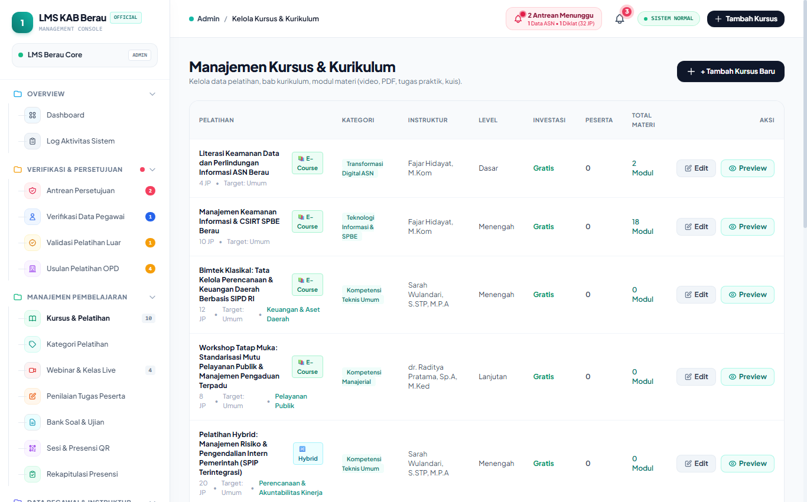
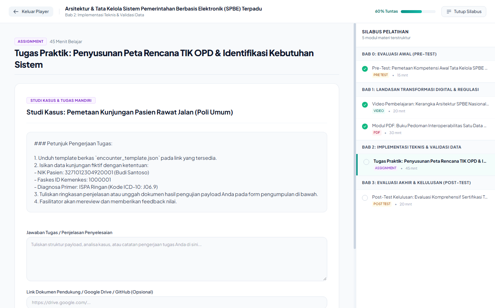
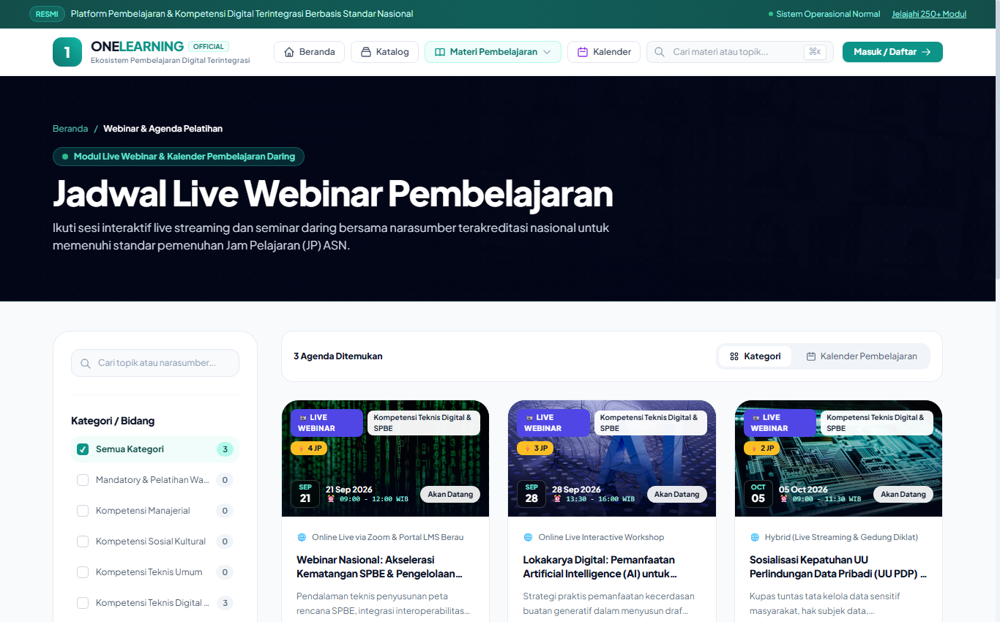
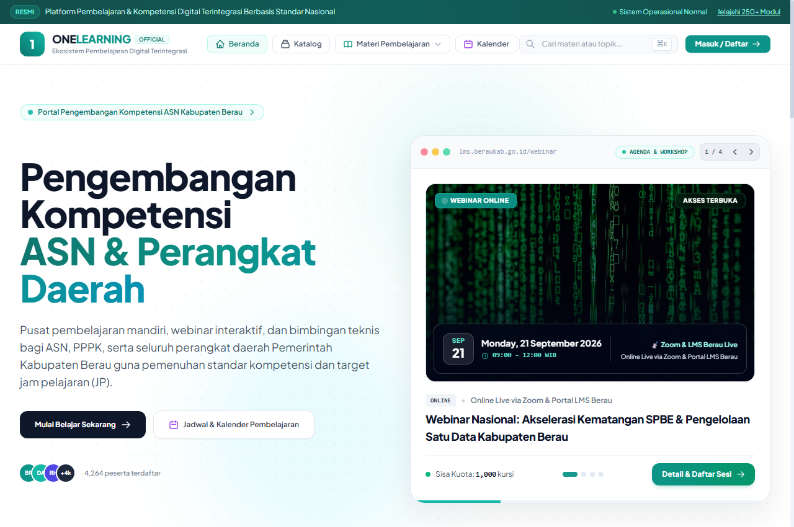
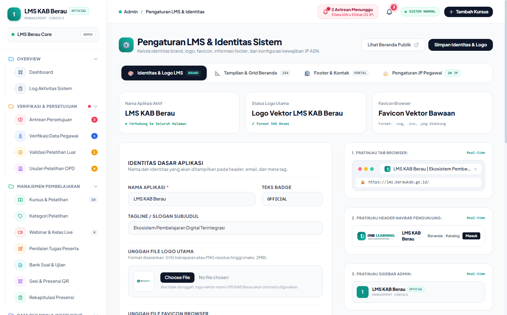
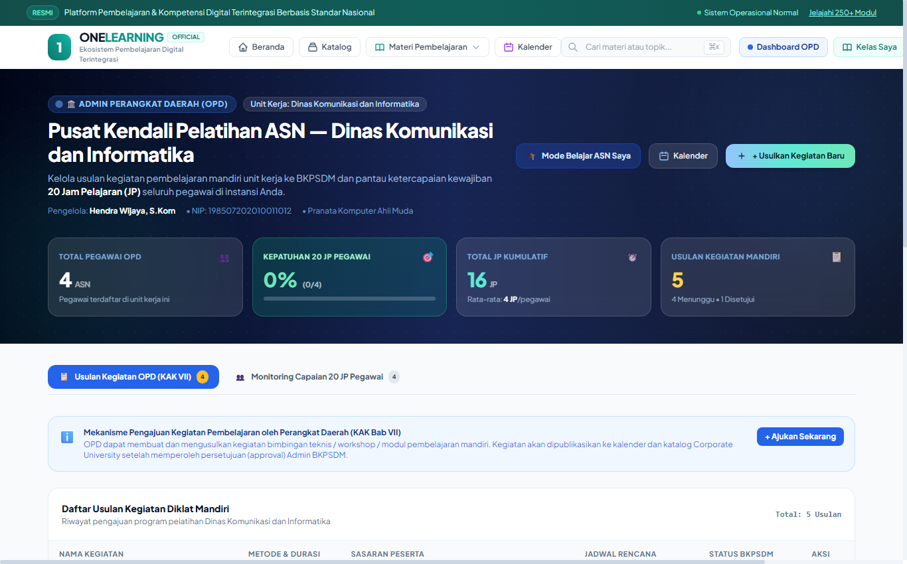
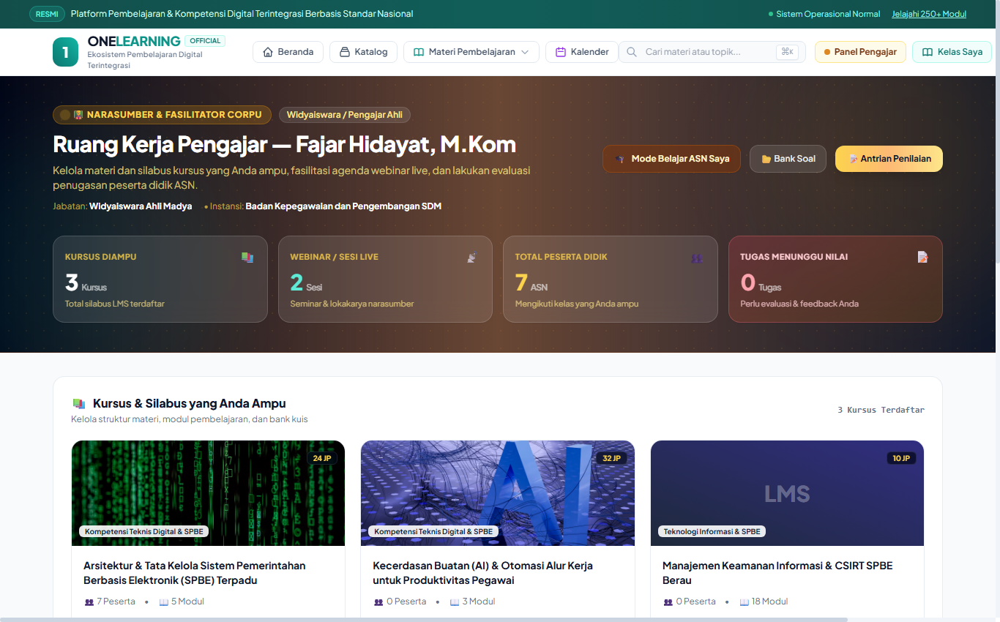
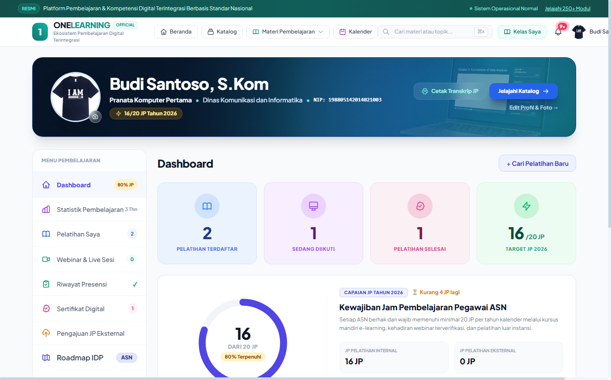
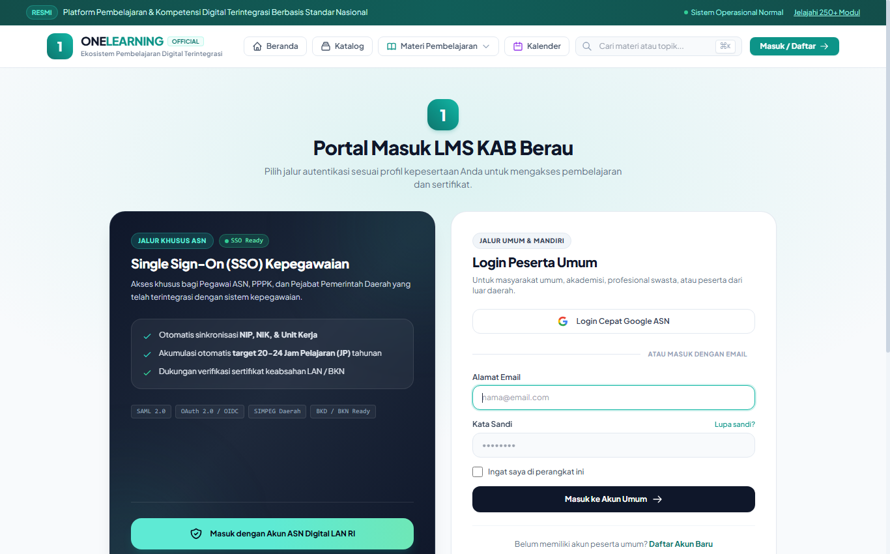
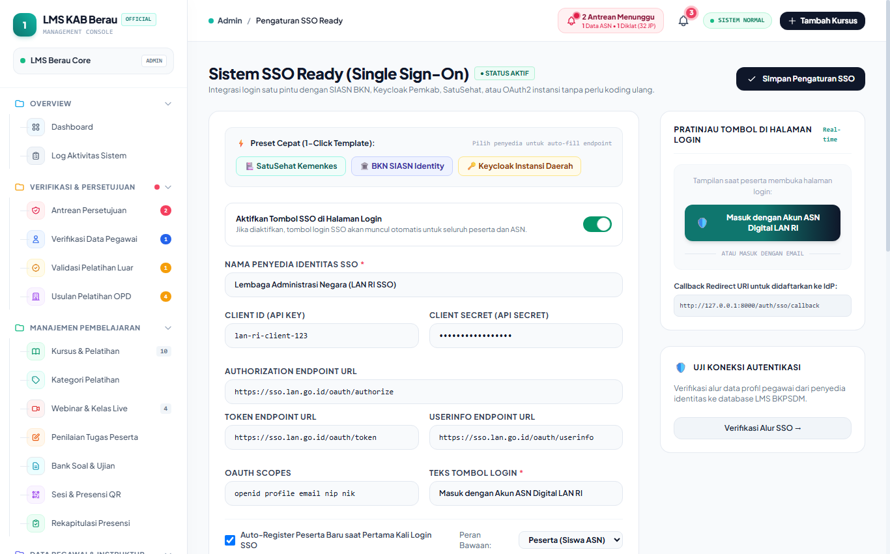

Petunjuk Pemasangan dari Arsip ZIP, Mitigasi Kerentanan PHP CVE Terbaru, Arsitektur Basis Data, dan Panduan Praktis Setiap Fitur: Pembuatan Materi Silabus, Penjadwalan Webinar, Setting Pop-Up Beranda, hingga Monitoring 20 Jam Pelajaran (JP) ASN.
Aplikasi LMS KAB Berau didistribusikan dalam bentuk paket arsip ZIP utuh. Halaman ini menjelaskan tata cara ekstraksi, konfigurasi awal, dan persyaratan ketat versi PHP untuk mencegah kerentanan keamanan siber nasional.
lms_kab_berau_v2.zip) pada direktori server dan ekstrak ke folder tujuan:
C:\laragon\www\lms/var/www/lms.env.example menjadi .env. Pastikan direktori storage dan bootstrap/cache memiliki izin tulis (*writable* / chmod 775).
Kombinasi teknologi yang dirancang secara matang untuk menjamin stabilitas tinggi, efisiensi beban server, keamanan data aparatur sipil negara, dan kemudahan pemeliharaan jangka panjang.
Menggunakan framework Laravel 11.x dengan struktur controller yang terpisah antara area pengguna publik, narasumber, dan panel admin. Logika bisnis rumit didelegasikan ke Service Classes yang teruji:
JpService: Mengalkulasi akumulasi Jam Pelajaran pegawai per tahun dan memvalidasi target 20 JP sesuai regulasi.SimpegApiService: Menghubungkan data profil pegawai dengan basis data SIMPEG daerah secara aman.SecurityService & HtmlPurifierService: Melakukan sanitasi menyeluruh terhadap input pengguna untuk mencegah serangan injeksi skrip.
Menerapkan Tailwind CSS v3.4 dengan sistem desain resmi BKPSDM Berau (palet brand-500 hingga brand-900) dan font Plus Jakarta Sans.
Menggunakan Alpine.js v3 untuk interaktivitas reaktif (seperti timer kuis real-time, auto-close pop-up, filter katalog pencarian, dan simulator tanda tangan sertifikat) tanpa memerlukan framework JavaScript monolitik yang memberatkan peramban.
Berdasarkan mandat UU Perlindungan Data Pribadi (UU PDP No. 27/2022), data sensitif aparatur (NIP dan NIK) tidak disimpan dalam teks polos:
AES-256-CBC dengan kunci master APP_KEY.nip_hash): Sistem menghasilkan hash satu arah berbasis HMAC-SHA256 dengan salt rahasia daerah ASN_ENCRYPTION_SALT. Mekanisme ini memungkinkan sistem melakukan pencarian presisi melalui query SQL tanpa mendekripsi seluruh data di memori.Aplikasi menggunakan basis data SQLite 3 dengan mode WAL (Write-Ahead Logging) atau MySQL 8.0+. Skema telah dioptimasi dengan foreign key cascading dan indexing presisi.
| Entitas Tabel | Kolom Utama & Tipe Data | Fungsi Sistem & Hubungan Relasi |
|---|---|---|
| users | id, name, email, nip (AES-256), nip_hash, role, opd_name, is_active |
Menyimpan akun seluruh ASN, Admin OPD, Trainer, dan Super Admin BKPSDM beserta hash NIP untuk pencarian terenkripsi. |
| categories | id, name, slug, parent_id, color, order |
Kategori kompetensi (Manajerial, Sosio-Kultural, Teknis SPBE, SIPD Keuangan Daerah). |
| courses | id, category_id, instructor_id, title, duration_hours, cert_seal_text, level |
Data induk pelatihan e-learning, bobot Jam Pelajaran (JP), pengampu, dan template sertifikat kelulusan. |
| lessons | id, course_id, title, type (video/doc/article/quiz), video_url, pdf_attachment |
Struktur materi pelatihan: pemutar video, dokumen PDF interaktif, artikel narasi, atau kuis kelulusan. |
| quizzes & questions | passing_grade, time_limit_minutes, question_text, options, correct_option |
Modul evaluasi pre-test dan post-test dengan perhitungan passing grade otomatis. |
| certificates | certificate_number, user_id, course_id, verification_hash, issued_at |
Penerbitan lembar sertifikat sah dengan kode hash SHA-256 yang ditautkan ke kode QR validasi publik. |
| webinars | delivery_mode, event_date, time_start, location_type, webinar_url, quota, jp |
Manajemen agenda lokakarya daring, bimtek Zoom, dan pelatihan klasikal tatap muka di Sasana Praja. |
| attendance_sessions | webinar_id, session_title, token, qr_code, is_active |
Pencatatan presensi peserta berbasis kode token dan pemindaian QR code dinamis. |
| popups & sliders | title, badge_text, content, button_link, image_url, order, is_active |
Pengumuman modal dialog beranda dan banner hero slider untuk publikasi program prioritas. |
Seluruh data operasional berada pada file database/database.sqlite. Mode WAL (*Write-Ahead Logging*) memastikan kecepatan penulisan konkruen tanpa kendala penguncian tabel. Administrator dapat mencadangkan seluruh data sistem hanya dengan menyalin satu file tanpa perlu mematikan layanan server.
Petunjuk terperinci bagi administrator dan instruktur dalam membuat mata pelatihan baru, menyusun modul hierarkis, mengunggah materi, hingga mempublikasikan silabus ke katalog umum.
Memfasilitasi digitalisasi modul diklat ASN Kabupaten Berau agar dapat dipelajari secara asinkronus (mandiri) oleh pegawai kapan saja dan di mana saja. Setiap kursus memiliki bobot Jam Pelajaran (JP) yang diakui secara sah untuk pemenuhan kewajiban 20 JP tahunan.
4 JP).
Panduan merumuskan evaluasi Pre-Test dan Post-Test, pengaturan batas nilai kelulusan (*passing grade*), pengacakan soal, dan manajemen impor bank soal massal.
Menjadi parameter objektif ketuntasan kompetensi ASN. Post-test memastikan bahwa aparatur benar-benar menyerap materi pelatihan sebelum berhak mendapatkan sertifikat kelulusan dan pengakuan Jam Pelajaran.
20 menit).
Panduan penjadwalan bimbingan teknis tatap muka di gedung diklat maupun lokakarya daring Zoom, alokasi kuota peserta, dan pencatatan presensi berkeamanan token.
Memusatkan seluruh agenda lokakarya, sosialisasi regulasi, dan bimtek kedinasan. Sistem mencegah kecurangan absensi (*titip absen*) melalui validasi kehadiran real-time berbasis kode QR dinamis dan pengesahan Jam Pelajaran otomatis ke profil peserta.
4 JP).
Panduan menyusun pengumuman penting daerah melalui dialog pop-up otomatis serta mengelola banner spanduk bergulir (*hero slider*) pada halaman muka sistem.
Memastikan informasi penting kepegawaian (seperti surat edaran diklat wajib, pengumuman uji kompetensi, atau pendaftaran program beasiswa) langsung terbaca oleh seluruh ASN saat pertama kali membuka website tanpa perlu mencari di halaman tersembunyi.
PENGUMUMAN PENTING).localStorage peramban sehingga tidak berulang kali muncul mengganggu kenyamanan navigasi.
Panduan mengatur tanda tangan pejabat kepala badan, segel digital berkeamanan tinggi, nomor register unik, serta pengaturan identitas logo instansi.
Menghasilkan sertifikat digital sah secara otomatis seketika setelah aparatur menyelesaikan pelatihan. Setiap lembar sertifikat memiliki nomor seri unik dan kode QR kriptografi yang dapat diverifikasi keasliannya oleh instansi mana pun tanpa perantara manual.
LMS BERAU VALID) untuk memvalidasi otentisitas tanda tangan digital pada kode QR.LMS KAB Berau) dan Tagline Resmi pemerintah daerah.bkpsdm@beraukab.go.id), nomor telepon dinas ((0554) 21064), dan alamat kantor di Tanjung Redeb.| Komponen Unggahan | Rekomendasi Dimensi | Rasio & Format | Batas File | Kegunaan & Lokasi |
|---|---|---|---|---|
| Logo Utama Instansi | 400 × 100 px | 4:1 • PNG Transparan / SVG | Maks. 2 MB | Header navbar, footer, login, email dinas |
| Favicon Peramban | 32 × 32 / 64 × 64 px | 1:1 • ICO / PNG / SVG | Maks. 1 MB | Tab browser, bookmark & shortcut desktop |
| Hero Slider Banner | 1920 × 800 px | 2.4:1 • JPG / PNG / WebP | Maks. 3 MB | Spanduk rotasi portal beranda utama |
| Thumbnail Kursus & Webinar | 1280 × 720 px | 16:9 • JPG / PNG / WebP | Maks. 2 MB | Kartu katalog diklat & poster webinar |
| Background Piagam Sertifikat | 2970 × 2100 px | A4 Landscape • PNG / JPG | Maks. 8 MB | Template dasar sertifikat cetak 300 DPI |
| Tanda Tangan Basah Pejabat | 400 × 200 px | 2:1 • PNG Transparan (Wajib) | Maks. 1 MB | Tanda tangan Kepala Badan BKPSDM |
| Gambar Pop-Up Pengumuman | 800 × 450 px | 16:9 • JPG / PNG / WebP | Maks. 2 MB | Spanduk dialog modal beranda portal |
| Foto Profil ASN / Avatar | 500 × 500 px | 1:1 • JPG / PNG / WebP | Maks. 2 MB | Foto dinas profil & transkrip resmi 20 JP |

Alur kerja administrator kepegawaian dinas dalam memantau capaian jam pelajaran seluruh staf dan mengajukan proposal bimbingan teknis internal ke BKPSDM.
Membantu kepala dinas dan kasubbag kepegawaian memastikan seluruh staf di instansinya memenuhi kewajiban 20 JP tahunan sesuai amanat undang-undang, serta memfasilitasi pengesahan kegiatan pelatihan internal dinas agar diakui secara sah oleh pemerintah daerah.
6 JP).
Panduan kerja instruktur dan widyaiswara dalam membimbing peserta diklat, memantau kemajuan kelas ampu, dan memeriksa berkas penugasan praktik peserta.
Memberikan wewenang kepada narasumber untuk menilai studi kasus nyata (seperti telaahan staf, draf SOP, atau dokumen rencana aksi digital) yang dikumpulkan oleh peserta sebagai syarat kelulusan pelatihan kompetensi teknis.

Panduan bagi aparatur sipil negara dalam mengakses materi belajar, memantau indikator capaian 20 JP tahunan, dan mencetak lembar transkrip resmi kepegawaian.
Menjadi buku rapor digital bagi setiap pegawai ASN Berau untuk memastikan kewajiban belajar minimal 20 JP per tahun terpenuhi dengan bukti transkrip berstempel digital yang sah sebagai syarat kenaikan pangkat dan berkala.


Peserta dapat mencetak lembar Transkrip Resmi Pengembangan Kompetensi ASN langsung dari dashboard dalam format cetak standar A4, memuat rekapitulasi pelatihan tuntas, tanggal kelulusan, dan akumulasi JP sah berstempel digital BKPSDM untuk syarat berkala atau kenaikan pangkat.
Bagi aparatur yang mengikuti pelatihan di luar daerah (seperti diklat LAN RI, BKN, atau Kementerian), peserta dapat mengunggah berkas sertifikat dan surat penugasan pada formulir Klaim Diklat Eksternal untuk diverifikasi dan disahkan oleh tim verifikator BKPSDM.
Spesifikasi teknis login satu pintu OAuth 2.0, gerbang pertukaran data dua arah dengan SIMPEG Kabupaten Berau, dan standar operasional pemeliharaan server.

Daftarkan URI berikut pada konsol Keycloak / IdP:
https://lms.beraukab.go.id/auth/sso/callbacknip, email, name, nik| Metode | Endpoint REST API | Fungsi Interoperabilitas Kepegawaian |
|---|---|---|
| GET | /api/v1/asn/participants |
Sinkronisasi seluruh daftar aparatur beserta akumulasi JP dan sertifikat sah. |
| GET | /api/v1/asn/participants/{nip} |
Pengambilan data riwayat kompetensi 1 pegawai (didukung blind index nip_hash). |
| GET | /api/v1/asn/certificates/verify/{hash} |
Endpoint publik verifikasi validitas sertifikat berbasis hash SHA-256. |
| GET | /api/v1/asn/stats |
Ringkasan statistik makro pencapaian 20 JP se-Kabupaten Berau. |
Disusun dan Dipelihara oleh:
Tim Pengembang Sistem Informasi & Pranata KomputerMengesahkan & Menyetujui:
Kepala BKPSDM Kabupaten Berau